소방설비기사(기계분야) (2016-10-01 기출문제)
1과목: 소방원론
1. 제 1종 분말소화약제인 탄산수소나트륨은 어떤색으로 착색되어 있는가?
- 담회색
- 담홍색
- 회색
- 백색
(정답률: 64%)

2. 정전기에 의한 발화과정으로 옳은 것은?
- 방전→전하의 축적→전하의 발생→발화
- 전하의 발생→전하의 축적→방전→발화
- 전하의 발생→방전→전하의 축적→발화
- 전하의 축적→반전→전하의 발생→발화
(정답률: 69%)
3. 화재실 혹은 화재공간의 단위바닥면적에 대한 등가가연물량의 값을 화재하중이라 하며 식으로 표시할 경우에는 Q=∑(Gt·Ht)/H·A 와 같이 표현할 수 있다. 여기에서 H는 무엇을 나타내는가?
- 목재의 단위발열량
- 가연물의 단위발열량
- 화재실내 가연물의 전체 발열량
- 목재의 단위발열량과 가연물의 단위발열량을 합한 것
(정답률: 60%)
4. 피난계획의 일반원칙 중 Fool proof 원칙에 해당하는 것은?
- 저지능인 상태에서도 쉽게 식별이 가능하도록 그림이나 색채를 이용하는 원칙
- 피난설비를 반드시 이동식으로 하는 원칙
- 한 가지 피난기구가 고장이 나도 다른 수단을 이용할 수 있도록 고려하는 원칙
- 피난설비를 첨단화된 전자식으로 하는 원칙
(정답률: 74%)
5. 연기에 의한 감광계수가 0.1m-1, 가시거리가 20~30m일 때의 상황을 옳게 설명한 것은?
- 건물 내부에 익숙한 사람이 피난에 지장을 느낄 정도
- 연기감지기가 작동할 정도
- 어두운 것을 느낄 정도
- 앞이 거의 보이지 않을 정도
(정답률: 69%)
6. 다음 중 증기비중이 가장 큰 것은?
- 이산화탄소
- 할론 1301
- 할론 1211
- 할론 2402
(정답률: 65%)
7. 밀폐된 내화건물의 실내에 화재가 발생했을 때 그 실내의 환경변화에 대한 설명 중 틀린 것은?
- 기압이 강하한다.
- 산소가 감소된다.
- 일산화탄소가 증가한다.
- 이산화탄소가 증가한다.
(정답률: 72%)
8. 다음 중 제거소화 방법과 무관한 것은?
- 산불의 확산방지를 위하여 산림의 일부를 벌채한다.
- 화학반응기의 화재 시 원료 공급관의 밸브를 잠근다.
- 유류화재 시 가연물을 포로 덮는다.
- 유류탱크 화재 시 주변에 있는 유류탱크의 유류를 다른 곳으로 이동시킨다.
(정답률: 78%)
9. 분말소화약제의 열분해 반응식 중 다음 ( ) 안에 알맞은 화학식은?
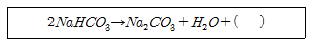
- CO
- CO2
- Na
- Na2
(정답률: 74%)
10. 실내에서 화재가 발생하여 실내의 온도가 21℃에서 650℃로 되었다면, 공기의 팽창은 처음의 약 몇 배가 되는가? (단, 대기압은 공기가 유동하여 화재 전후가 같다고 가정한다.)
- 3.14
- 4.27
- 5.69
- 6.01
(정답률: 64%)
11. 니트로셀룰로오스에 대한 설명으로 틀린 것은?
- 질화도가 낮을수록 위험성이 크다.
- 물을 첨가하여 습윤시켜 운반한다.
- 화약의 원료로 쓰인다.
- 고체이다.
(정답률: 63%)
12. 조연성가스로만 나열되어 있는 것은?
- 질소, 불소, 수증기
- 산소, 불소, 염소
- 산소, 이산화탄소, 오존
- 질소, 이산화탄소, 염소
(정답률: 66%)
13. 칼륨에 화재가 발생할 경우에 주수를 하면 안되는 이유로 가장 옳은 것은?
- 산소가 발생하기 때문에
- 질소가 발생하기 때문에
- 수소가 발생하기 때문에
- 수증기가 발생하기 때문에
(정답률: 70%)
14. 건축물의 화재성상 중 내화 건축물의 화재 성상으로 옳은 것은?
- 저온 장기형
- 고온 단기형
- 고온 장기형
- 저온 단기형
(정답률: 66%)
15. 청정소화약제 중 HCFC-22를 82% 포함하고 있는 것은?
- IG-541
- HFC-227ea
- IG-55
- HCFC BLEND A
(정답률: 56%)
16. 자연발화의 예방을 위한 대책이 아닌 것은?
- 열의 축적을 방지한다.
- 주위 온도를 낮게 유지한다.
- 열전도성을 나쁘게 한다.
- 산소와의 접촉을 차단한다.
(정답률: 70%)
17. 물의 물리·화학적 성질로 틀린 것은?
- 증발잠열은 539.6cal/g으로 다른 물질에 비해 매우 큰 편이다.
- 대기압하에서 100℃의 물이 액체에서 수증기로 바뀌면 채적은 약 1603배 정도 증가한다.
- 수소 1분자와 산소 1/2분자로 이루어져 있으며 이들 사이의 화학결합은 극성 공유결합이다.
- 분자간의 결합은 쌍극자-쌍극자 상호작용의 일종인 산소결합에 의해 이루어진다.
(정답률: 60%)
18. 할로겐 화합물 소화설비에서 Halon 1211 약제의 분자식은?
- CBr2ClF
- CF2BrCl
- CCl2BrF
- BrC2ClF
(정답률: 73%)
19. 보일 오버(Boil over)현상에 대한 설명으로 옳은 것은?
- 아래층에서 발생한 화재가 위층으로 급격히 옮겨 가는 현상
- 연소유의 표면이 급격히 증발하는 현상
- 기름이 뜨거운 물 표면 아래에서 끓는 현상
- 탱크 저부의 물이 급격히 증발하여 기름이 탱크 밖으로 화재를 동반하여 방출하는 현상
(정답률: 73%)
20. 위험물안전관리법상 위험물의 적재 시 혼재기준 중 혼재가 가능한 위험물로 짝지어진 것은? (단, 각 위험물은 지정수량의 10배로 가정한다.)
- 질산칼륨과 가솔린
- 과산화수소와 황린
- 철분과 유기과산화물
- 등유와 과염소산
(정답률: 57%)
2과목: 소방유체역학
21. 유체에 관한 설명 중 옳은 것은?
- 실제유체는 유동할 때 마찰손실이 생기지 않는다.
- 이상유체는 높은 압력에서 밀도가 변화하는 유체이다.
- 유체에 압력을 가하면 체적이 줄어드는 유체는 압축성 유체이다.
- 압력을 가해도 밀도변화가 없으며 점성에 의한 마찰손실만 있는 유체가 이상유체이다.
(정답률: 62%)
22. 송풍기의 풍량 15m3/s, 전압 540Pa, 전압효율이 55%일 때 필요한 축동력은 몇 kW인가?
- 2.23
- 4.46
- 8.1
- 14.7
(정답률: 47%)
23. 직경 50 ㎝의 배관 내를 유속 0.06m/s의 속도로 흐르는 물의 유량은 약 몇 L/min 인가?
- 153
- 255
- 338
- 707
(정답률: 58%)
24. 공기의 온도 T1에서의 음속 c1과 이보다 20K 높은 온도 T2에서의 음속 c2의 비가 c2/c1=1.⑤이면 T1은 약 몇 도인가?
- 97K
- 195K
- 273K
- 300K
(정답률: 36%)
25. 다음 계측기 중 측정하고자 하는 것이 다른 것은?
- Bourdon 압력계
- U자관 마노미터
- 피에조미터
- 열선풍속계
(정답률: 62%)
26. 열전도도가 0.08W/m·K인 단열재의 고온부가 75℃, 저온부가 20℃이다. 단위 면적당 열손실이 200W/m2인 경우의 단열재 두께는 몇 mm 인가?
- 22
- 45
- 55
- 80
(정답률: 40%)
27. 그림과 같은 원형관에 유체가 흐르고 있다. 원형관 내의 유속분포를 측정하여 실험식을 구하였더니
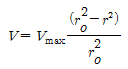
이었다. 관 속을 흐르는 유체의 평균속도는 얼마인가?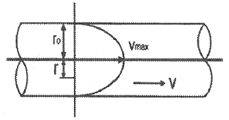
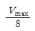
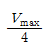
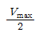
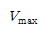
(정답률: 49%)
28. 부차적 손실계수 K = 40인 밸브를 통과할 때의 수두손실이 2m 일 때, 이 밸브를 지나는 유체의 평균 유속은 약 몇 m/s인가?
- 0.49
- 0.99
- 1.98
- 9.81
(정답률: 48%)
29. 두 개의 견고한 밀폐용기 A, B가 밸브로 연결되어 있다. 용기 A에는 온도 300K, 압력 100kPa의 공기 1m3, 용기 B에는 온도 300K, 압력 330kPa의 공기 2m3가 들어 있다. 밸브를 열어 두 용기 안에 들어있는 공기 (이상기체)를 혼합한 후 장시간 방치하였다. 이 때 주위 온도는 300K로 일정하다. 내부 공기의 최종압력은 약 몇 kPa 인가?
- 177
- 210
- 215
- 253
(정답률: 33%)
30. 지름이 15㎝인 관에 질소가 흐르는데, 피토관에 의한 마노미터는 4㎝Hg의 차를 나타냈다. 유속은 약 몇 m/s 인가? (단, 질소의 비중은 0.00114, 수은의 비중은 13.6, 중력가속도는 9.8m/s2 이다.)(오류 신고가 접수된 문제입니다. 반드시 정답과 해설을 확인하시기 바랍니다.)
- 76.5
- 85.6
- 96.7
- 1⑤.6
(정답률: 36%)
31. 그림과 같은 곡관에 물이 흐르고 있을 때 계기압력으로 P1 이 98 kPa이고, P2 가 29.42 kPa이면 이 곡관을 고정 시키는데 필요한 힘은 몇 N 인가? (단, 높이차 및 모든 손실은 무시한다.)
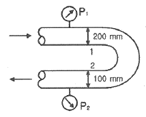
- 4141
- 4314
- 4565
- 4743
(정답률: 31%)
32. 그림과 같이 수족관에 직경 3m의 투시경이 설치되어 있다. 이 투시경에 작용하는 힘은 약 몇 kN인가?
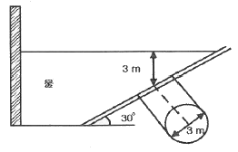
- 207.8
- 123.9
- 87.1
- 52.4
(정답률: 43%)
33. 화씨온도 200°F 섭씨온도(℃)로 약 얼마인가?
- 93.3℃
- 186.6℃
- 279.9℃
- 392℃
(정답률: 61%)
34. 공동현상(Cavitation)의 발생 원인과 가장 관계가 먼 것은?
- 관내의 수온이 높을 때
- 펌프의 흡입 양정이 클 때
- 펌프의 설치 위치가 수원보다 낮을 때
- 관내의 물의 정압이 그때의 증기압보다 낮을 때
(정답률: 52%)
35. 소화펌프의 회전수가 1450rpm일 때 양정이 25m, 유량이 5m3/min 이었다. 펌프의 회전수를 1740rpm으로 높일 경우 양정(m)과 유량(m3/min)은? (단, 회전차의 직경은 일정하다.)
- 양정 : 17 유량 : 4.2
- 양정 : 21 유량 : 5
- 양정 : 30.2 유량 : 5.2
- 양정 : 36 유량 : 6
(정답률: 52%)
36. 안지름이 0.1m인 파이프 내를 평균유속 5m/s 로 물이 흐르고 있다. 길이 10m 사이에서 나타나는 손실수두는 약 몇 m 인가? (단, 관마찰계수는 0.013 이다.)
- 0.7
- 1
- 1.5
- 1.7
(정답률: 50%)
37. 베르누이의 정리
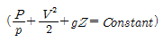
가 적용되는 조건이 될 수 없는 것은?- 압축성의 흐름이다.
- 정상 상태의 흐름이다.
- 마찰이 없는 흐름이다.
- 베르누이 정리가 적용되는 임의의 두 점은 같은 유선상에 있다.
(정답률: 54%)
38. 절대온도와 비체적이 각각 T, v인 이상기체 1kg이 압력이 P로 일정하게 유지되는 가운데 가열되어 절대온도가 6T까지 상승되었다. 이 과정에서 이상기체가 한 일은 얼마인가?
- Pv
- 3Pv
- 5Pv
- 6Pv
(정답률: 48%)
39. 직경이 D인 원형 축과 슬라이딩 베어링 사이에(간격=t, 길이=L)에 점성계수가 μ인 유체가 채워져 있다. 축을 w의 각속도로 회전시킬 때 필요한 토크를 구하면? (단, t<<D)
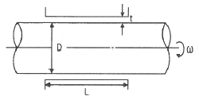
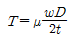
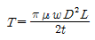
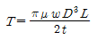
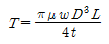
(정답률: 39%)
40. 수면에 잠긴 무게가 490N인 매끈한 쇠구슬을 줄에 매달아서 일정한 속도로 내리고 있다. 쇠구슬이 물속으로 내려갈수록 들고 있는데 필요한 힘은 어떻게 되는가? (단, 물은 정지된 상태이며, 쇠구슬은 완전한 구형체이다.)
- 적어진다.
- 동일하다.
- 수면 위보다 커진다.
- 수면 바로 아래보다 커진다.
(정답률: 55%)
3과목: 소방관계법규
41. 위험물 제조소 게시판의 바탕 및 문자의 색으로 올바르게 연결된 것은?
- 바탕 - 백색, 문자 - 청색
- 바탕 - 청색, 문자 -흑색
- 바탕 - 흑색, 문자 - 백색
- 바탕 - 백색, 문자 - 흑색
(정답률: 63%)
42. 화재예방, 소방시설 설치 · 유지 및 안전관리에 관한 법률에 따른 소방안전관리 업무를 하지 아니한 특정소방대상물의 관계인에게는 몇 만원 이하의 과태료를 부과하는가?
- 100
- 200
- 300
- 500
(정답률: 44%)
43. 교육연구시설 중 학교 지하층은 바닥면적의 합계가 몇m2 이상인 경우 연결살수설비를 설치해야 하는가?
- 500
- 600
- 700
- 1000
(정답률: 33%)
44. 일반 소방시설 설계업(기계분야)의 영업범위는 공장의 경우 연면적 몇 m2 미만의 특정소방대상물에 설치되는 기계분야 소방시설의 설계에 한하는가? (단, 제연설비가 설치되는 특정소방대상물은 제외한다.)
- 10000m2
- 20000m2
- 30000m2
- 40000m2
(정답률: 49%)
45. 소방시설공사업법상 소방시설업 등록신청 신청서 및 첨부서류에 기재되어야 할 내용이 명확하지 아니한 경우 서류의 보완 기간은 며칠이내인가?
- 14
- 10
- 7
- 5
(정답률: 32%)
46. 소방용수시설 중 소화전과 급수탑의 설치기준으로 틀린 것은?
- 소화전은 상수도와 연결하여 지하식 또는 지상식의 구조로 할 것
- 소방용호스와 연결하는 소화전의 연결금속구의 구경은 65mm로 할 것
- 급수탑 급수배관의 구경은 100mm 이상으로 할 것
- 급수탑의 개폐밸브는 지상에서 1.5m 이상 1.8m 이하의 위치에 설치할 것
(정답률: 67%)
47. 소방본부장이 소방특별조사위원회 위원으로 임명하거나 위촉할 수 있는 사람이 아닌 것은?
- 소방시설관리사
- 과장급 직위 이상의 소방공무원
- 소방 관련 분야의 석사학위 이상을 취득한 사람
- 소방 관련 법인 또는 단체에서 소방 관련 업무에 3년 이상 종사한 사람
(정답률: 62%)
48. 소화난이도등급 Ⅰ의 제조소등에 설치해야 하는 소화설비기준 중 유황만을 저장 · 취급하는 옥내탱크저장소에 설치해야 하는 소화설비는?
- 옥내소화전설비
- 옥외소화전설비
- 물분무소화설비
- 고정식 포소화설비
(정답률: 55%)
49. 고형알코올 그 밖에 1기압 상태에서 인화점이 40℃ 미만인 고체에 해당하는 것은?
- 가연성고체
- 산화성고체
- 인화성고체
- 자연발화성물질
(정답률: 57%)
50. 소방체험관의 설립 · 운영권자는?
- 국무총리
- 국민안전처장관
- 시 · 도지사
- 소방본부장 및 소방서장
(정답률: 65%)
51. 제2류 위험물의 품명에 따른 지정수량의 연결이 틀린 것은?
- 황화린 - 100kg
- 유황 - 300kg
- 철분 - 500kg
- 인화성고체 - 1000kg
(정답률: 44%)
52. 소방장비 등에 대한 국고보조 대상사업의 범위와 기준보조율은 무엇으로 정하는가?
- 총리령
- 대통령령
- 시 · 도의 조례
- 국토교통부령
(정답률: 65%)
53. 정기점검의 대상인 제조소등에 해당하지 않는 것은?
- 이송취급소
- 이동탱크저장소
- 암반탱크저장소
- 판매취급소
(정답률: 56%)
54. 위험물안전관리법상 행정처분을 하고자하는 경우 청문을 실시해야 하는 것은?
- 제조소등 설치허가의 취소
- 제조소등 영업정지 처분
- 탱크시험자의 영업정지
- 과징금 부과처분
(정답률: 62%)
55. 소방용품의 형식승인을 반드시 취소하여야 하는 경우가 아닌 것은?
- 거짓 또는 부정한 방법으로 형식승인을 받은 경우
- 시험시설의 시설기준에 미달되는 경우
- 거짓 또는 부정한 방법으로 제품검사를 받은 경우
- 변경승인을 받지 아니한 경우
(정답률: 57%)
56. 소방기본법상의 벌칙으로 5년 이하의 징역 또는 3000만원 이하의 벌금에 해당하지 않는 것은?(관련 규정 개정전 문제로 여기서는 기존 정답인 2번을 누르면 정답 처리 됩니다. 자세한 내용은 해설을 참고하세요)
- 소방자동차가 화재진압 및 구조 · 구급활동을 위하여 출동할 때 그 출동을 방해한 자
- 사람을 구출하거나 불이 번지는 것을 막기 위하여 불이 번질 우려가 있는 소방대상물의 사용제한의 강제처분을 방해한 자
- 출동한 소방대의 소방장비를 파손하거나 그 호용을 해하여 화재진압 · 인명구조 또는 구급활동을 방해한 자
- 정당한 사유 없이 소방용수시설의 효용을 해치거나 그 정당한 사용을 방해한 자
(정답률: 65%)
57. 하자보수 대상 소방시설 중 하자보수 보증기간이 2년이 아닌 것은?
- 유도표지
- 비상경보설비
- 무선통신보조설비
- 자동화재탐지설비
(정답률: 64%)
58. 소방기본법상 소방용수시설의 저수조는 지면으로부터 낙차가 몇 m 이하가 되어야 하는가?
- 3.5
- 4
- 4.5
- 6
(정답률: 70%)
59. 특정소방대상물 중 의료시설에 해당되지 않는 것은?
- 노숙인 재활시설
- 장애인 의료재활시설
- 정신의료기관
- 마약진료소
(정답률: 63%)
60. 작동기능점검을 실시한 자는 작동기능점검 실시 결과 보고서를 며칠 이내에 소방본부장 또는 소방서장에게 제출해야 하는가?(2020년 08월 14일 개정된 규정 적용됨)
- 7
- 10
- 20
- 30
(정답률: 54%)
4과목: 소방기계시설의 구조 및 원리
61. 항공기 격납고 포헤드의 1분당 방사량은 바닥면적 1m2당 최소 몇 L 이상이어야 하는가? (단, 수성막포 소화약제를 사용한다.)
- 3.7
- 6.5
- 8.0
- 10
(정답률: 42%)
62. 청정소화약제 소화설비의 수동식 기동장치의 설치기준 중 틀린 것은?
- 5kg 이상의 힘을 가하여 기동할 수 있는 구조로 할 것
- 전기를 사용하는 기동장치에는 전원표시등을 설치할 것
- 기동장치의 방출용 스위치는 음향경보장치와 연동하여 조작될 수 있는 것으로 할 것
- 해당 방호구역의 출입구부근 등 조작을 하는자가 쉽게 피난할 수 있는 장소에 설치할 것
(정답률: 69%)
63. 제연구역의 선정방식 중 계단실 및 그 부속실을 동시에 제어하는 것의 방연풍속은 몇 m/s 이상이어야 하는가?
- 0.5
- 0.7
- 1
- 1.5
(정답률: 45%)
64. 완강기 벨트의 강도는 늘어뜨린 방향으로 1개에 대하여 몇 N의 인장하중을 가하는 시험에서 끊어지거나 현저한 변형이 생기지 않아야 하는가?
- 1500
- 3900
- 5000
- 6500
(정답률: 46%)
65. 분말소화설비의 자동식 기동장치의 설치기준 중 틀린 것은? (단, 자동식 기동장치는 자동화재탐지설비의 감지기와 연동하는 것이다.)
- 기동용 가스용기의 충전비는 1.5 이상으로 할 것
- 자동식 기동장치에는 수동으로도 기동할 수 있는 구조로 할 것
- 전기식 기동장치로서 3병 이상의 저장용기를 동시에 개방하는 설비는 2병 이상의 저장용기에 전자개방밸브를 부착할 것
- 기동용 가스용기에는 내압시험압력의 0.8배 내지 내압시험압력 이하에서 작동하는 안전장치를 설치할 것
(정답률: 54%)
66. 주방용 자동소화장치의 설치기준으로 틀린 것은?
- 아파트의 각 세대별 주방 및 오피스텔의 각 실별 주방에 설치한다.
- 소화약제 방출구는 환기구의 청소부분과 분리되어 있어야 한다.
- 주방용 자동소화장치에 사용하는 가스차단 장치는 주방배관의 개폐밸브로부터 1m 이하의 위치에 설치한다.
- 주방용 자동소화장치의 탐지부는 수신부와 분리하여 설치하되, 공기보다 무거운 가스를 사용하는 장소에는 바닥면으로부터 30㎝ 이하의 위치에 설치한다.
(정답률: 61%)
67. 물분무소화설비를 설치하는 주차장의 배수설비 설치기준 중 차량이 주차하는 바닥은 배수구를 향하여 얼마 이상의 기울기를 유지해야 하는가?
- 1/100
- 2/100
- 3/100
- 5/100
(정답률: 76%)
68. 물분무소화설비 송수구의 설치기준 중 틀린 것은?
- 송수구에는 이물질을 막기 위한 마개를 씌울 것
- 지면으로부터 높이가 0.8m 이상 1.5m 이하의 위치에 설치할 것
- 송수구의 가까운 부분에 자동배수밸브 및 체크밸브를 설치할 것
- 송수구는 하나의 층의 바닥면적이 3000m2를 넘을 때마다 1개(5개를 넘을 경우에는 5개로 한다) 이상을 설치할 것
(정답률: 60%)
69. 전역방출방식 고발포용 고정포방출구의 설치기준으로 옳은 것은? (단, 해당 방호구역에서 외부로 새는 양 이상의 포수용액을 유효하게 추가하여 방출하는 설비가 있는 경우는 제외한다.)
- 고정포방출구는 바닥면적 600m2마다 1개 이상으로 할 것
- 고정포방출구는 방호대상물의 최고부분보다 낮은 위치에 설치할 것
- 개구부에 자동폐쇄장치를 설치할 것
- 특정소방대상물 및 포의 팽창비에 따른 종별에 관계없이 해당 방호구역의 관포체적 1m3에 대한 1분당 포수용액 방출량은 1L 이상으로 할 것
(정답률: 54%)
70. 모피창고에 이산화탄소 소화설비를 전역방출 방식으로 설치할 경우 방호구역의 체적이 600m3라면 이산화탄소 소화약제의 최소 저장량은 몇 kg 인가? (단, 설계농도는 75%이고, 개구부 면적은 무시한다.)
- 780
- 960
- 1200
- 1620
(정답률: 38%)
71. 소화용수설비를 설치하여야 할 특정소방대상물에 있어서 유수의 양이 최소 몇 m3/min 이상인 유수를 사용할 수 있는 경우에 소화수조를 설치하지 아니할 수 있는가?
- 0.8
- 1
- 1.5
- 2
(정답률: 51%)
72. 근린생활시설 지하층에 적응성이 있는 피난기구는? (단, 입원실이 있는 의원 · 산후조리원 · 접골원 · 조산소는 제외한다.)
- 피난사다리
- 미끄럼대
- 구조대
- 피난교
(정답률: 63%)
73. 배관 · 행가 및 조명기구가 있어 살수의 장애가 있는 경우 스프링클러헤드의 설치방법으로 옳은 것은? (단, 스프링클러헤드와 장애물과의 이격거리를 장애물 폭의 3배 이상 확보한 경우는 제외한다.)
- 부착면과의 거리는 30㎝ 이하로 설치한다.
- 헤드로부터 반경 60㎝ 이상의 공간을 보유한다.
- 장애물과 부착면 사이에 설치한다.
- 장애물 아래에 설치한다.
(정답률: 55%)
74. 분말소화설비 분말소화약제 1kg당 저장용기의 내용적 기준으로 틀린 것은?
- 제1종 분말 : 0.8L
- 제2종 분말 : 1.0L
- 제3종 분말 : 1.0L
- 제4종 분말 : 1.8L
(정답률: 71%)
75. 특수가연물을 저장 또는 취급하는 랙크식 창고의 경우에는 스프링클러헤드를 설치하는 천장 · 반자 · 천장과 반자사이 · 덕트 · 선반 등의 각 부분으로부터 하나의 스프링클러헤드까지의 수평거리 기준은 몇 m 이하인가? (단, 성능이 별도로 인정된 스프링클러헤드를 수리계산에 따라 설치하는 경우는 제외한다.)
- 1.7
- 2.5
- 3.2
- 4
(정답률: 52%)
76. 옥내소화전설비 배관의 설치기준 중 틀린 것은?
- 옥내소화전방수구와 연결되는 가지배관의 구경은 40mm 이상으로 한다.
- 연결송수관설비의 배관과 겸용할 경우 주배관의 구경은 100mm 이상으로 한다.
- 펌프의 토출 측 주배관의 구경은 유속이 4m/s 이하가 될 수 있는 크기 이상으로 한다.
- 주배관중 수직배관의 구경은 15mm 이상으로 한다.
(정답률: 62%)
77. 수직강하식 구조대의 구조에 대한 설명 중 틀린 것은? (단, 건물내부의 별실에 설치하는 경우는 제외한다.)
- 구조대의 포지는 외부포지와 내부포지로 구성한다.
- 사람의 중량에 의하여 하강속도를 조절할 수 있어야 한다.
- 구조대는 연속하여 강하할 수 있는 구조이어야 한다.
- 입구틀 및 취부틀의 입구는 지름 50㎝ 이상의 구체가 통과할 수 있어야 한다.
(정답률: 62%)
78. 스프링클러헤드에서 이융성 금속으로 융착되거나 이융성 물질에 의하여 조립된 것은?
- 후레임
- 디프렉터
- 유리벌브
- 휴지블링크
(정답률: 57%)
79. 소화용수설비에 설치하는 채수구의 수는 소요수량이 40m3 이상 100m3 미만인 경우 몇 개를 설치해야 하는가?
- 1
- 2
- 3
- 4
(정답률: 66%)
80. 배출풍도의 설치기준 중 다음 ( )안에 알맞은 것은?
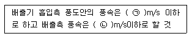
- ㉠ 15, ㉡ 10
- ㉠ 10, ㉡ 15
- ㉠ 20, ㉡ 15
- ㉠ 15, ㉡ 20
(정답률: 61%)